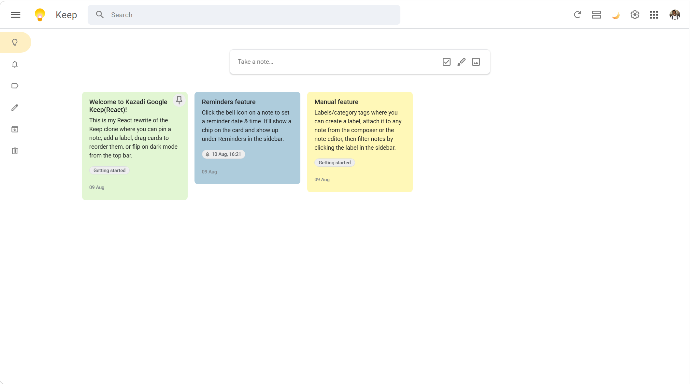
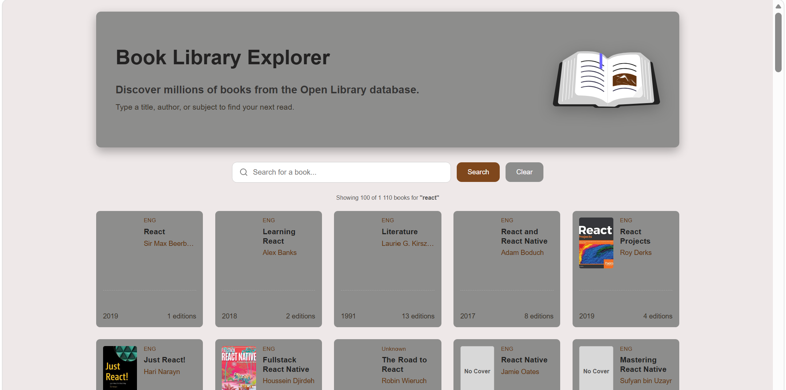

Projects
A collection of everything I've built and deployed so far — from a full-stack Firebase e-commerce app to React builds, API integrations, and a team capstone project.

DEPLOYED PROJECTS
What I've built
Click a project to open its full case study — the problem, my approach, trade-offs, and the links.

Urban Threads

Google Keep Clone

Book Library

Quiz Widget

Twitter/X Clone

YouTube
Team Capstone — iHub Africa Website Prototype
Built as a 6-person capstone project: a responsive multi-page site for iHub Africa, an innovation hub for young people entering the digital economy. I served as Git Manager — owning the repository workflow the rest of the team built on.
Kazadi - Git Manager
Nonkululeko - Project Lead
Tina - Frontend Developer
Gcina - JavaScript Developer
Emily - Designer
Dido - QA Tester
My contribution: managed the shared GitHub repository, set up the feature-branch workflow, reviewed pull requests before merge, and resolved merge conflicts as five other people pushed changes to the same codebase.
Built with HTML, CSS & JavaScript
iHub Website Prototype
A responsive website built for iHub Africa using HTML, CSS, and JavaScript to showcase programmes, opportunities, and the organisation's mission through a modern user-friendly design.